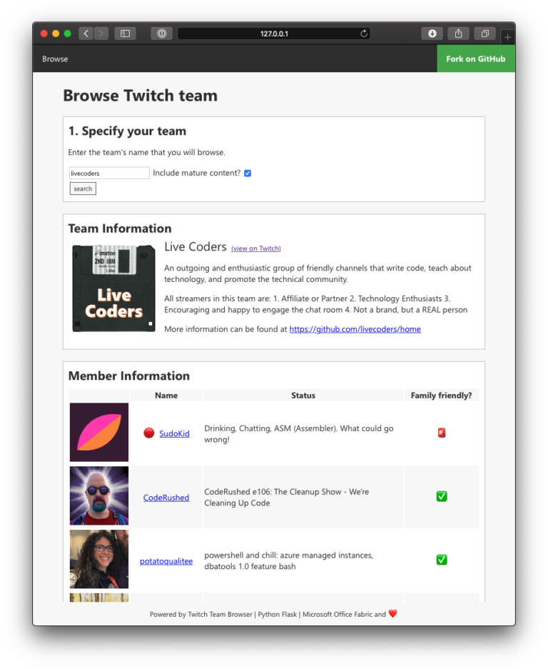

tl;dr
Ich habe etwas mit Python und Flask experimentiert und heraus kam der TTB. Eine kleine Webanwendung mit dem man Twitch Teams und dessen Mitglieder inklusive Online-Status und Co. aufgelistet bekommt.
Hintergrund
Es ist schon einige Zeit her seit dem ich etwas mit Web und Co. gemacht habe. Aus diesem Grund wollte ich einmal wieder damit experimentieren aber ohne den großen Overhead und damit Trägheit von Java EE *.wars oder dicken Python Django Projekten zu haben.
Aus meiner Studienzeit war mit Flask noch ein Begriff. Es stellte sich heraus das dieses kleine Framework wirklich leichtfüßig ist und einen schnellen Einstieg in die Webwelt mit Python auch für Anfänger bietet.
Script
Das Script nutzt zwei einfache Twitch API Endpoints um einmal die Teaminformation abzufragen und auf Grundlage dieser den Online-Status der Mitglieder anfordert.
Diese werden dann in einfachen Templates für den Browser heraus gerendert – ganz ohne JavaScript.
Damit die Seite überhaupt etwas nach etwas aussieht habe ich mich wie so oft bei Microsoft Office Fabrics Stylesheet bedient. Auch wenn hierbei der Fokus auf React liegt, kann man auch für “Vanilla” Projekte hier einiges erleichterndes abgreifen.

Danke auch an das wirklich schnell und hilfreich antwortende Twitch Developer Forum. Hier erhielt ich den entscheidenden Tipp wie ich die Online-Status-Funktionalität einbauen kann. Merci.
Die Quelltexte dazu liegen wie immer auf meinem GitHub Profil im Repository python-flask-twitch-team-browser.
Zurück